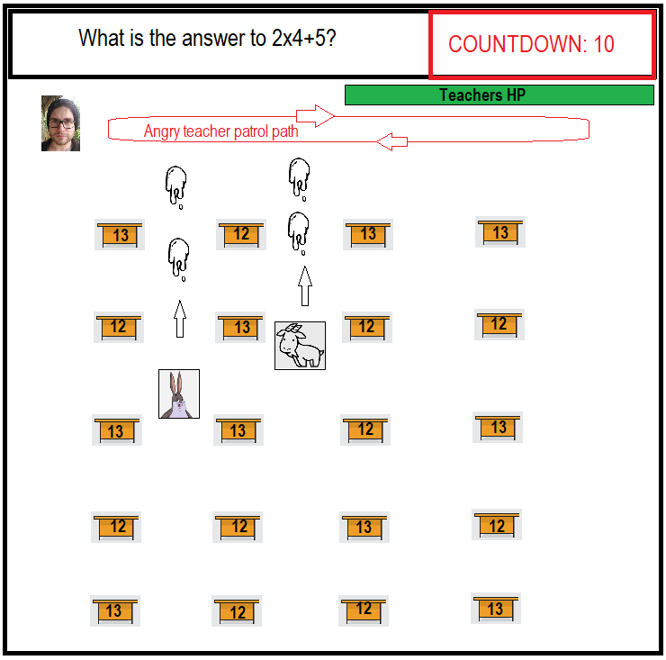
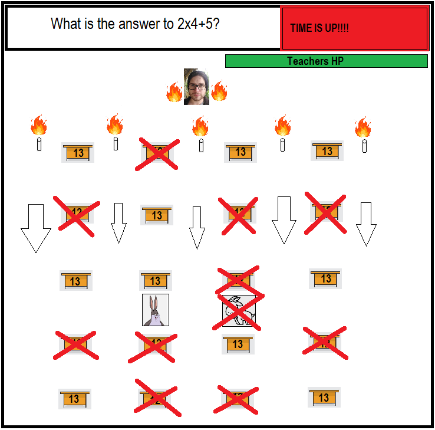
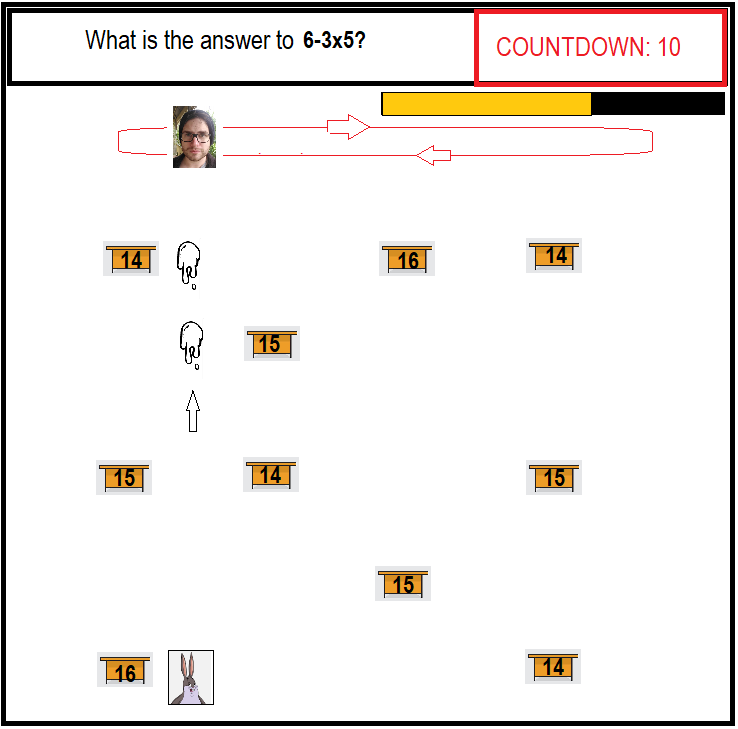

Whether we accept it or not, video games are a part of life. According to Statistica, over 80% of children aged 5 and above play them (Hughes, 2021). As such, it came to no surprise that my children would fall into the ‘gamer' pitfall as they aged.
So much so that they would rather spend time on their computers or ipads than with dad, me.
What better way to connect with them then through the creation of a video game. With a mix of educational elements and fast paced evasion and combat, I hope to keep them entertained and have fun while learning.
Hopefully, this game will show them that anyone can create a video game, and hopefully spark their interest in not only playing games, but also creating them.
Motivation
As a gamer, I understand the appeal of the pixel world, but as a parent my concern is the impact videos games have on my children. As many of these games serve content and force feed them to my kids, their imagination and creativity is slowly sapped away.
Recent attempts at a verbal creativity game where we took turns adding a sentence to a story yielded horrifying results from my son. Beyond minecraft and roblox references, he was unable to imagine any interesting ideas for the story.
In another attempt to reawaken their imagination, we started reading fantasy stories together. Along the way I’d ask them about specific scenes or creatures and have them draw or describe it in their own words. The results worried me as I’d compare them to my past self who grew up without these technologies.
However, the exercise did draw interest from both kids and for a while we connected and started having fun with story time. But a few weeks on and they would lose interest mainly because reading was like studying and studying equals boring.
The idea
A video game to captivate and challenge the target audience:
- Bailey aka Mini-me aka (The Son)
- Ivy aka Mini-boss aka (The Daughter)
- Probably the neighbours kids and anyone else who might be interested
The layout
The game incorporate both 2D top down and side scrolling.
- Top down view will be used in the larger school map where the user returns frequently as they travel around to the different buildings to combat the classroom bosses.
- Side scrolling view will be used for theschool buildings that lead to classrooms as these buildings will incorporate multiple levels, gravity will come into play.
- Classroom boss, or in this case Teacher, encounters can be either top down or side scrolling. This is dependant on the specific encounter.
The Story
The user plays a student whose sole purpose is to navigate the school grounds and various school buildings to combat and defeat the boss level teachers. Along the way, they will encounter various NPC that fall under the following categories:
- Friendly
- offers clues and tips to class and teacher encounters
- restores health in the form of a hug
- grants stats boosts temporarily
- Neutral
- gives random educational tips that may or may not be helpful to encounters
- offers advice on dating?
- random gibberish
- Aggressive - School Bullies and angry wildlife
Aggressive NPC can be combated by moving away exiting their aggression range, or giving them a good stomping (Kids are not encouraged to do this IRL).
Navigation of school buildings will require the user to avoid obstacles which include:
- ground obstacles that move across the ground - avoided by jumping over them
- patrolling obstacles like bullies - these have a set patrol pathway and can be avoided by jumping or stomping
- ranged obstacles like spitballs - these can come from various angles and can only be avoided by movement.
Within these school buildings are the classrooms occupied by boss level teachers. Each encounter will be different and require the use of both knowledge in a specific subject and hand eye coordination to defeat and pass the class.
Example boss fight walk through - Angry Math Teacher

A math question is put up on the board and a 10 second timer starts.
Scattered around the room are desks with numbers on them. During the countdown, the user must navigate the room and hit the teacher with projectiles to lower the teacher’s health.
Prior to the end of the countdown, the user must hide behind a desk with the number they believe is the answer to the math equation.

At countdowns end, Angry Teacher goes super saiyan and fires chalk sticks down the classroom, destroying any desks with the incorrect answers.
Any student behind an incorrectly numbered desk will take damage. At zero health, the student is kicked from the class.

A new round commences with a new math equation on the board and the countdown starts over.
Desks do not respawn between rounds so there are a limited number of rounds for the user to whittle the teacher’s health to 0 and end the game.
Upon defeating the teacher, the student is praised for his comprehensive knowledge of the subject and quick accuracy with projectiles (!disclaimer on not trying it out in a real classroom here!).
The student receives a mark for the class based on the duration of the match which includes accuracy and damage dealt.
To complete the school day, the user must navigate to the various classrooms in each building and complete a different boss level fight (lesson). Each classroom encounter will revolve around a different subject taught in school.
Upon conquering all classrooms, the user is faced with the final boss, the principal. During the encounter with the principal, the user will be faced with problems from all subjects. Defeating the principal, ends the game.
A final result of all their subject classes are presented in a captivating way with plenty of fanfare.
‘Hall of Fame’ list will record and maintain top ten students name and score for player bragging rights..
For some added fun, at the start of the game, the user is asked to input the names of various teachers and students.
Tools and Technologies
For hardware, a computer running windows 7 or later with a dx10 capable GPU will be used to create and edit the project.
The two main tools employed are the unity engine via the Unity editing software, and Adobe Photoshop.
The Unity editing software will be the primary tool to create and edit the game via code. A visual scripting mod such as Playmaker or Adventure Creator will be used to reduce coding requirements by allowing some of the elements to be handled via a visual point and click system user interface.
Adobe Photoshop will be used to create or edit the artwork and in game textures and skins.
For audio tracks and in game sound effects, ‘Google’ will be the place to begin. There are a multitude of free and paid sound effect websites. The hardest part will be trying to find the right sound to accommodate the feel of the game.
Skills required
The technical skill requirement is a thorough understanding of the C# programming language as this is the program’s native language. However, through the use of scripts, other .Net languages such as C++ can also be used.
Motivation and the willingness to face and overcome challenges are a must as there will be many hurdles during development, from the creative aspects like story boarding, character design, combat implementations, to the technical aspects like learning the coding and researching educational material to be used in game.
Outcome
The ideal outcome would be my children enjoying the video game I’ve created. I hope they find it challenging enough to replay and challenge the records if they succeed, yet not quit if they fail. Understanding where they failed and taking the necessary steps to overcome these failures is an important part of life.
Through problem solving together, they will hopefully learn the importance of social interaction and team work.
The biggest gain would come from them realising that an imagination and a personal drive to create and challenge life will open new opportunities. Playing other peoples games is great for inspiration but creating and playing your own is always better. Isn't life just an ongoing game of adventure and discovery filled with challenges?

 s2008156
s2008156